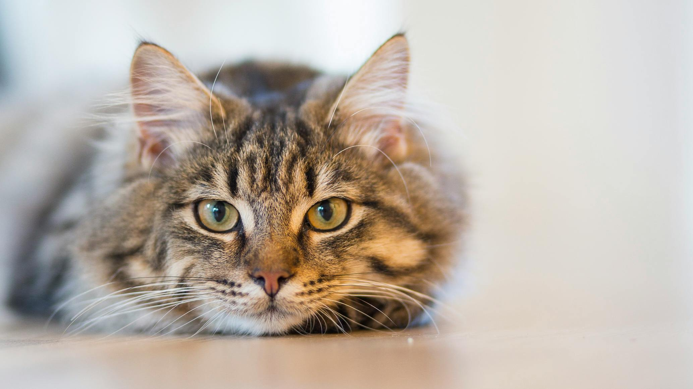

Interesting Information

Cats possess remarkable agility, crucial for stalking and capturing prey with precision.

Despite independence, cats form strong bonds, displaying affection through purring and rubbing.

Cats spend hours grooming to regulate temperature and maintain healthy fur and skin.

Cats are most active at dawn and dusk, a trait inherited from their nocturnal ancestors.